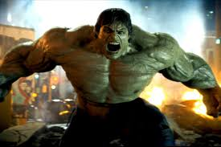
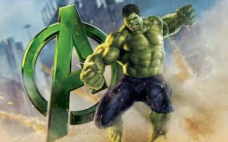
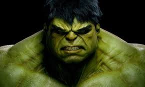

The Hulk is a superhero appearing in American comic books published by Marvel Comics. Created by writer Stan Lee and artist Jack Kirby, the character first appeared in the debut issue of The Incredible Hulk (May 1962). In his comic book appearances, the character, who has dissociative identity disorder (DID), is primarily represented by the alter ego Hulk, a green-skinned, hulking, and muscular humanoid possessing a limitless degree of physical strength, and the alter ego Dr. Robert Bruce Banner, a physically weak, socially withdrawn, and emotionally reserved physicist, both of whom typically resent each other.
Following his accidental exposure to gamma rays while saving the life of Rick Jones during the detonation of an experimental bomb, Banner is physically transformed into the Hulk when subjected to emotional stress, at or against his will. This transformation often leads to destructive rampages and conflicts that complicate Banner's civilian life. The Hulk's level of strength is usually conveyed proportionate to his anger level. Commonly portrayed as a raging savage, the Hulk has been represented with other alter egos, from a mindless, destructive force (War) to a brilliant warrior (World-Breaker), a self-hating protector (the Devil Hulk), a genius scientist in his own right (Doc Green), and a gangster (Joe Fixit).
Despite Hulk and Banner's desire for solitude, the character has a large supporting cast. This includes Banner's love interest Betty Ross, his best friend, Rick Jones, his cousin She-Hulk, and therapist and ally Doc Samson. In addition, the Hulk alter ego has many key supporting characters, like his co-founders of the superhero team the Avengers, his queen Caiera, fellow warriors Korg and Miek, and sons Skaar and Hiro-Kala. However, his uncontrollable power has brought him into conflict with his fellow heroes and others. Despite this, he tries his best to do what's right while battling villains such as the Leader, the Abomination, the Absorbing Man, and more. Lee stated that the Hulk's creation was inspired by a combination of Frankenstein and Dr. Jekyll and Mr. Hyde.[4] Although the Hulk's coloration has varied throughout the character's publication history, the usual color is green.
One of the most iconic characters in popular culture,[5][6] the character has appeared on a variety of merchandise, such as clothing and collectable items, inspired real-world structures (such as theme park attractions), and been referenced in several media. Banner and the Hulk have been adapted into live-action, animated, and video game incarnations. The character was first played in live-action by Bill Bixby and Lou Ferrigno in the 1978 television series The Incredible Hulk and its subsequent television films The Incredible Hulk Returns (1988), The Trial of the Incredible Hulk (1989), and The Death of the Incredible Hulk (1990). In the film, the character was played by Eric Bana in Hulk (2003). In the Marvel Cinematic Universe (MCU), the character was first portrayed by Edward Norton in the film The Incredible Hulk (2008) and then by Mark Ruffalo in later appearances in the franchise.
  